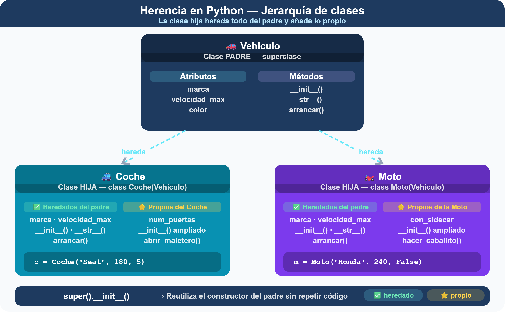
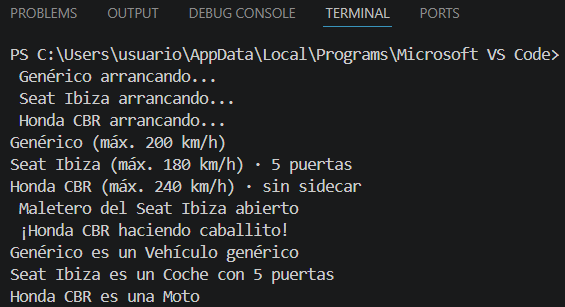
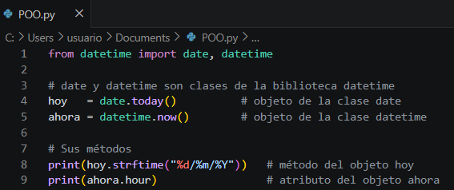
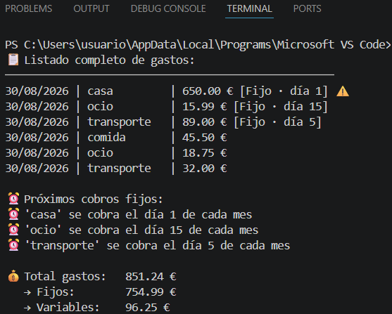

1. Herencia
Ya sabes crear clases y objetos. Ahora imagina que en tu Gestor necesitas diferenciar entre dos tipos de gastos: los gastos variables (compras, ocio, imprevistos) y los gastos fijos (alquiler, suscripciones, seguros). Ambos tienen importe, categoría y fecha, pero los fijos además tienen un día de cobro mensual y se repiten automáticamente.
Antes de pasar al ejemplo de nuestro Gestor, vamos a ver el clásico ejemplo del vehículo, para entender el concepto de herencia.
Imagina que tienes que modelar distintos tipos de vehículos. Todos comparten características comunes (marca, velocidad, número de ruedas) y comportamientos básicos (arrancar, parar). Pero un coche y una moto también tienen sus propias particularidades.
Sin herencia tendrías que crear dos clases completamente distintas repitiendo todo el código común. Con herencia, la clase hija (subclase) reutiliza todo lo de la clase padre (superclase), heredando sus atributos y métodos y solo añade lo que la diferencia.


¿Conoces el método super()?
super() permite llamar a los métodos de la clase padre desde la clase hija. Su uso más importante es en el constructor:
# En Coche.__init__:
super().__init__(marca, velocidad_max, color)
# Es equivalente a escribir:
Vehiculo.__init__(self, marca, velocidad_max, color)Fíjate en la diferencia entre hacerlo con y sin super():
# ❌ Sin super(): repetimos el código del padre
class Coche(Vehiculo):
def __init__(self, marca, velocidad_max, color, num_puertas):
self.marca = marca # Repetido del padre
self.velocidad_max = velocidad_max # Repetido del padre
self.color = color # Repetido del padre
self.num_puertas = num_puertas # Propio de Coche
# ✅ Con super(): reutilizamos el constructor del padre
class Coche(Vehiculo):
def __init__(self, marca, velocidad_max, color, num_puertas):
super().__init__(marca, velocidad_max, color) # Una sola línea
self.num_puertas = num_puertas # Propio de CocheUsando super().__init__() evitas repetir en la clase hija el código del constructor del padre. Si mañana añades un atributo nuevo a Vehiculo, como matricula, todas las clases hijas lo heredarán automáticamente sin tocar su código.
Veamos ahora como sería el código de la clase Vehículo y las clases hijas (coche y moto).
Clase Padre (Vehículo)
# ── CLASE PADRE ───────────────────────────────────────────────
class Vehiculo:
def __init__(self, marca, velocidad_max):
self.marca = marca
self.velocidad_max = velocidad_max
def __str__(self):
return f"{self.marca} (máx. {self.velocidad_max} km/h)"
def arrancar(self):
print(f" {self.marca} arrancando...")
Clase Hija (Coche)
# ── CLASE HIJA: Coche hereda de Vehiculo ──────────────────────
class Coche(Vehiculo):
def __init__(self, marca, velocidad_max, num_puertas):
super().__init__(marca, velocidad_max) # Llama al padre
self.num_puertas = num_puertas # Atributo propio
def __str__(self):
return f"{super().__str__()} · {self.num_puertas} puertas"
def abrir_maletero(self):
print(f"Maletero del {self.marca} abierto")Clase Hija (Moto)
# ── CLASE HIJA: Moto hereda de Vehiculo ───────────────────────
class Moto(Vehiculo):
def __init__(self, marca, velocidad_max, con_sidecar):
super().__init__(marca, velocidad_max) # Llama al padre
self.con_sidecar = con_sidecar # Atributo propio
def __str__(self):
sidecar = "con sidecar" if self.con_sidecar else "sin sidecar"
return f"{super().__str__()} · {sidecar}"
def hacer_caballito(self):
print(f" ¡{self.marca} haciendo caballito!")¿Jugamos con la herencia?
Prueba a continuación el siguiente código y comprueba cómo funciona la herencia:
# Creamos objetos de cada clase
v = Vehiculo("Genérico", 200)
c = Coche("Seat Ibiza", 180, 5)
m = Moto("Honda CBR", 240, False)
# Todos heredan arrancar() del padre
v.arrancar() # Genérico arrancando...
c.arrancar() # Seat Ibiza arrancando...
m.arrancar() # Honda CBR arrancando...
# Cada uno muestra su propio __str__
print(v) # Genérico (máx. 200 km/h)
print(c) # Seat Ibiza (máx. 180 km/h) · 5 puertas
print(m) # Honda CBR (máx. 240 km/h) · sin sidecar
# Métodos propios de cada clase hija
c.abrir_maletero() # Maletero del Seat Ibiza abierto
m.hacer_caballito() # ¡Honda CBR haciendo caballito!
# isinstance() distingue entre tipos
vehiculos = [v, c, m]
for veh in vehiculos:
if isinstance(veh, Coche):
print(f"{veh.marca} es un Coche con {veh.num_puertas} puertas")
elif isinstance(veh, Moto):
print(f"{veh.marca} es una Moto")
else:
print(f"{veh.marca} es un Vehículo genérico")La salida del terminal tiene que ser similar a la siguiente:

2. Relaciona
Relaciona el concepto con su descripción
Relaciona el concepto con su descripción
","showMinimize":false,"itinerary":{"showClue":false,"clueGame":"","percentageClue":40,"showCodeAccess":false,"codeAccess":"","messageCodeAccess":""},"cardsGame":[{"url":"","x":0,"y":0,"author":"","alt":"","audio":"","color":"#000000","backcolor":"#ffffff","eText":"Clase%20Padre","urlBk":"","xBk":0,"yBk":0,"authorBk":"","altBk":"","audioBk":"","colorBk":"#000000","backcolorBk":"#ffffff","eTextBk":"Clase%20de%20la%20que%20heredan%20otras%20clases.%20Define%20lo%20com%C3%BAn"},{"url":"","x":0,"y":0,"author":"","alt":"","audio":"","color":"#000000","backcolor":"#ffffff","eText":"Clase%20hija","urlBk":"","xBk":0,"yBk":0,"authorBk":"","altBk":"","audioBk":"","colorBk":"#000000","backcolorBk":"#ffffff","eTextBk":"Clase%20que%20hereda%20de%20otra%20y%20a%C3%B1ade%20sus%20propias%20caracter%C3%ADsticas"},{"url":"","x":0,"y":0,"author":"","alt":"","audio":"","color":"#000000","backcolor":"#ffffff","eText":"super().__init__()","urlBk":"","xBk":0,"yBk":0,"authorBk":"","altBk":"","audioBk":"","colorBk":"#000000","backcolorBk":"#ffffff","eTextBk":"Llama%20al%20constructor%20del%20padre%20desde%20la%20clase%20hija"},{"url":"","x":0,"y":0,"author":"","alt":"","audio":"","color":"#000000","backcolor":"#ffffff","eText":"isinstance(obj%2C%20Clase)","urlBk":"","xBk":0,"yBk":0,"authorBk":"","altBk":"","audioBk":"","colorBk":"#000000","backcolorBk":"#ffffff","eTextBk":"Comprueba%20si%20un%20objeto%20es%20instancia%20de%20una%20clase%20concreta"},{"url":"","x":0,"y":0,"author":"","alt":"","audio":"","color":"#000000","backcolor":"#ffffff","eText":"Herencia","urlBk":"","xBk":0,"yBk":0,"authorBk":"","altBk":"","audioBk":"","colorBk":"#000000","backcolorBk":"#ffffff","eTextBk":"Mecanismo%20que%20permite%20reutilizar%20el%20c%C3%B3digo%20de%20una%20clase%20en%20otra"},{"url":"","x":0,"y":0,"author":"","alt":"","audio":"","color":"#000000","backcolor":"#ffffff","eText":"M%C3%A9todo%20sobreescrito","urlBk":"","xBk":0,"yBk":0,"authorBk":"","altBk":"","audioBk":"","colorBk":"#000000","backcolorBk":"#ffffff","eTextBk":"M%C3%A9todo%20del%20padre%20redefinido%20en%20la%20clase%20hija%20con%20nuevo%20comportamiento"}],"isScorm":0,"textButtonScorm":"Guardar la puntuación","repeatActivity":true,"weighted":100,"textAfter":"","version":2,"percentajeCards":100,"type":1,"showSolution":true,"timeShowSolution":3,"time":3,"evaluation":false,"evaluationID":"","id":"idevice-mq6pvsy0-tqn104iml","msgs":{"msgSubmit":"Enviar","msgClue":"¡Genial! La pista es:","msgCodeAccess":"Código de acceso","msgPlayStart":"Pulse aquí para jugar","msgScore":"Puntuación","msgErrors":"Errores","msgHits":"Aciertos","msgMinimize":"Minimizar","msgMaximize":"Maximizar","msgFullScreen":"Pantalla Completa","msgExitFullScreen":"Salir del modo pantalla completa","msgNoImage":"Pregunta sin imágenes","msgEndGameScore":"Antes de guardar la puntuación comience la partida.","msgScoreScorm":"La puntuación no se puede guardar porque esta página no forma parte de un paquete SCORM.","msgOnlySaveScore":"¡Sólo puede guardar la puntuación una vez!","msgOnlySave":"Sólo puede guardar una vez","msgInformation":"Información","msgYouScore":"Su puntuación","msgAuthor":"Autoría","msgOnlySaveAuto":"Su puntuación se guardará después de cada pregunta. Sólo puede jugar una vez.","msgSaveAuto":"Su puntuación se guardará automáticamente después de cada pregunta.","msgSeveralScore":"Puede guardar la puntuación tantas veces como quiera","msgYouLastScore":"La última puntuación guardada es","msgActityComply":"Ya ha realizado esta actividad.","msgPlaySeveralTimes":"Puede realizar esta actividad cuantas veces quiera","msgClose":"Cerrar","msgAudio":"Audio","msgNumQuestions":"Número de tarjetas","msgTryAgain":"Necesita al menos un %s% de respuestas correctas para conseguir la información. Vuelva a intentarlo.","msgEndGameM":"Has completado el juego. Tu puntuación es %s.","msgUncompletedActivity":"Actividad no completada","msgSuccessfulActivity":"Actividad superada. Puntuación: %s","msgUnsuccessfulActivity":"Actividad no superada. Puntuación: %s","msgTypeGame":"Relaciona","msgCheck":"Comprobar","msgRestart":"Reiniciar"}}3. Biblioteca de clases
A lo largo del curso ya has usado bibliotecas de clases sin saberlo. Cuando escribes from datetime import date estás importando una clase llamada date. Cuando creas hoy = date.today() estás creando un objeto de esa clase:

También tk.Button, tk.Label y tk.Entry de tkinter son clases que heredan de una clase base Widget. Cada vez que creabas un botón en tu interfaz, estabas instanciando la clase Button.
4. ¿Qué ocurre en este código?
Elija la respuesta correcta
Has completado la actividad. Revisa las preguntas en las que has fallado y vuelve al apartado 10.2. Herencia y bibliotecas de clases para repasar los conceptos de clase padre, clase hija, super().__init__() e isinstance(). Recuerda que puedes repetir la actividad todas las veces que necesites. ¡Sigue practicando!

5. Del vehículo al Gestor de Gastos
A lo largo de este bloque has aprendido los conceptos de la Programación Orientada a Objetos usando el ejemplo del vehículo. Ahora es el momento de aplicar todo lo aprendido a tu propio proyecto: el Gestor de Gastos Personales.
En esta actividad vas a reescribir tu Gestor usando dos clases que modelan los tipos de gastos que puede registrar la aplicación.
Las clases que debes crear:
-
Clase Gasto — clase padre.
Representa un gasto variable del mes. Debe tener:
-
- Atributos: importe, categoria y fecha (asignada automáticamente con datetime).
- Método __init__: recibe importe y categoria como parámetros.
- Método __str__: devuelve una línea con la fecha, categoría e importe formateado.
- Método es_elevado(): devuelve True si el importe supera los 100 €.
- Método es_valido(): devuelve True si la categoría está en la tupla CATEGORIAS.
- Clase GastoFijo — clase hija que hereda de Gasto.
Representa un gasto que se repite cada mes (alquiler, suscripciones...). Debe tener:
-
- Atributo propio: dia_cobro (día del mes en que se cobra).
- Método __init__: recibe importe, categoria y dia_cobro. Usa super().__init__() para reutilizar el constructor del padre.
- Método __str__: amplía el del padre añadiendo [Fijo · día X].
- Método aviso_cobro(): muestra un mensaje indicando qué día del mes se cobra ese gasto.
Lo que debe hacer el programa
Una vez definidas las clases, escribe el programa principal que:
- Defina la tupla CATEGORIAS con: comida, transporte, ocio, casa, salud.
- Cree al menos 3 gastos fijos usando la clase GastoFijo (por ejemplo: alquiler, Netflix, seguro).
- Cree al menos 3 gastos variables usando la clase Gasto (por ejemplo: comida, ocio, transporte).
- Guarde todos los gastos en una sola lista mezclando ambos tipos.
- Muestre el listado completo de gastos usando print(g) para cada uno, añadiendo ⚠️ si el gasto es elevado.
- Muestre los avisos de cobro solo para los gastos fijos usando isinstance().
- Calcule y muestre el total, desglosado en gastos fijos y variables.
Así debe verse la salida de tu programa:

¿Necesitas alguna pista?
- Usa import datetime para asignar la fecha automáticamente en __init__.
- En GastoFijo.__init__ llama a super().__init__(importe, categoria) antes de asignar dia_cobro.
- En GastoFijo.__str__ usa super().__str__() para no repetir el código del padre.
- Usa isinstance(g, GastoFijo) dentro del bucle para distinguir los tipos de gasto.
Mostrar Retroalimentación
import datetime
CATEGORIAS = ("comida", "transporte", "ocio", "casa", "salud")
class Gasto:
"""Representa un gasto variable."""
def __init__(self, importe, categoria):
self.importe = float(importe)
self.categoria = categoria.lower().strip()
self.fecha = datetime.date.today().strftime("%d/%m/%Y")
def __str__(self):
return f"{self.fecha} | {self.categoria:<12} | {self.importe:.2f} €"
def es_elevado(self):
return self.importe > 100
def es_valido(self):
return self.categoria in CATEGORIAS
class GastoFijo(Gasto):
"""Representa un gasto fijo mensual. Hereda de Gasto."""
def __init__(self, importe, categoria, dia_cobro):
super().__init__(importe, categoria)
self.dia_cobro = dia_cobro
def __str__(self):
return f"{super().__str__()} [Fijo · día {self.dia_cobro}]"
def aviso_cobro(self):
print(f"⏰ '{self.categoria}' se cobra el día {self.dia_cobro} de cada mes")
# ── Programa principal ─────────────────────────────────────────
gastos = []
# Gastos fijos mensuales
gastos.append(GastoFijo(650.00, "casa", 1))
gastos.append(GastoFijo(15.99, "ocio", 15))
gastos.append(GastoFijo(89.00, "transporte", 5))
# Gastos variables
gastos.append(Gasto(45.50, "comida"))
gastos.append(Gasto(18.75, "ocio"))
gastos.append(Gasto(32.00, "transporte"))
# Mostrar todos
print("📋 Listado completo de gastos:")
print("─" * 52)
for g in gastos:
alerta = " ⚠️" if g.es_elevado() else ""
print(f"{g}{alerta}")
# Avisos de cobro solo para fijos
print("\n⏰ Próximos cobros fijos:")
for g in gastos:
if isinstance(g, GastoFijo):
g.aviso_cobro()
# Totales desglosados
total = sum(g.importe for g in gastos)
fijos = sum(g.importe for g in gastos if isinstance(g, GastoFijo))
variables = total - fijos
print(f"\n💰 Total gastos: {total:.2f} €")
print(f" → Fijos: {fijos:.2f} €")
print(f" → Variables: {variables:.2f} €")¿Tu programa no funciona? Comprueba esto:
- ¿La clase GastoFijo incluye (Gasto) en su definición?
- ¿Usas super().__init__() en el constructor de GastoFijo?
- ¿Usas isinstance(g, GastoFijo) para distinguir los tipos?
- ¿El __str__ de GastoFijo llama a super().__str__()?
Reto extra
Crea una tercera clase GastoExtraordinario(Gasto) para gastos imprevistos importantes con un atributo motivo y un método generar_informe() que muestre todos sus datos detalladamente.
6. Importante
Clase y Objeto
Una clase es el molde que define la estructura: qué atributos tiene y qué puede hacer. Un objeto es una instancia concreta creada a partir de ese molde, con sus propios valores.
class Gasto: # Molde
pass
g1 = Gasto() # Objeto concretoLa clase se define una sola vez. Los objetos se crean tantas veces como necesites.
El constructor __init__ y self
__init__ se ejecuta automáticamente al crear un objeto y asigna los valores iniciales de sus atributos. self hace referencia al propio objeto que se está creando.
class Gasto:
def __init__(self, importe, categoria):
self.importe = importe # Atributo del objeto
self.categoria = categoria # Atributo del objetoself es obligatorio como primer parámetro en todos los métodos, aunque Python lo gestiona automáticamente al llamarlos.
Atributos y métodos
Los atributos son las características del objeto (qué tiene). Los métodos son sus comportamientos (qué hace). Se accede a ambos con la notación punto.
g1 = Gasto(45.50, "comida")
# Acceder a atributos
print(g1.importe) # 45.5
# Llamar a métodos
g1.mostrar() # Ejecuta el métodoEl método str
Define cómo se representa el objeto cuando usas print(). Sin él, Python muestra una dirección de memoria poco útil.
def __str__(self):
return f"{self.fecha} | {self.categoria} | {self.importe:.2f} €"
print(g1) # 06/11/2024 | comida | 45.50 €Herencia
Una clase hija hereda todos los atributos y métodos de la clase padre y añade los suyos propios. Se indica poniendo la clase padre entre paréntesis.
class GastoFijo(Gasto): # Hereda de Gasto
def __init__(self, importe, categoria, dia_cobro):
super().__init__(importe, categoria) # Constructor del padre
self.dia_cobro = dia_cobro # Atributo propiosuper().__init__() reutiliza el constructor del padre sin repetir código. Si el padre cambia, la clase hija se actualiza automáticamente.
isinstance()
Cuando tienes una lista con objetos de distintas clases, isinstance() te permite identificar de qué tipo es cada uno.
for g in gastos:
if isinstance(g, GastoFijo):
g.aviso_cobro() # Solo los gastos fijos